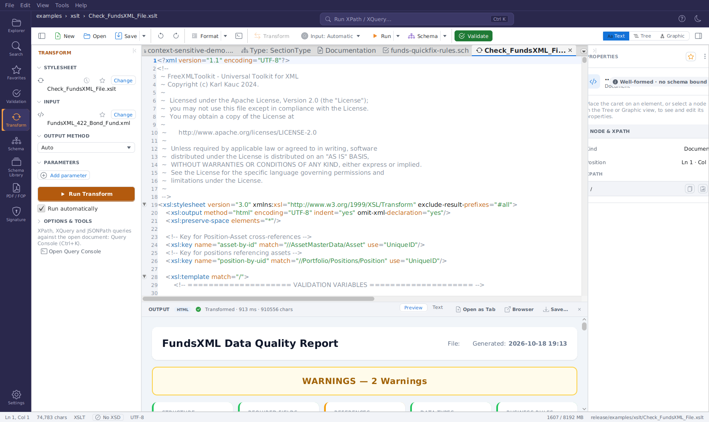

XSLT Developer¶
Version: 2.1.0
Note: The standalone XSLT Developer tab has been retired. Its capabilities now live in the Unified Shell's Transform panel (stylesheet, input, output method, parameters) together with the Debug button next to Run Transform (the interactive debugger with breakpoints, stepping, variables, call stack, watches and live messages in a dock below the editor; also Tools → Debug with XSLT… / Shift+F5), and the run options and advanced tools in the panel's collapsed OPTIONS & TOOLS section — Batch Transform…, Profile run, and Trace run. This page describes how to do XSLT and XQuery development in the shell, plus a collection of ready-to-use XSLT and XQuery patterns. XPath / XQuery queries against the open document run in the Query Console.
FreeXmlToolkit is a full-featured environment for creating and testing XSLT stylesheets and XQuery scripts. It includes live transformation, parameter support, batch processing, and debugging tools.
Overview¶

An XSLT stylesheet open in the editor, the Transform panel on the left with the stylesheet and input selected, and the transformation result in the OUTPUT panel below the editorXSLT/XQuery development in the Unified Shell provides:
- Full code editors for XML, XSLT, and XQuery — every file opens as a normal editor tab
- Live preview and watch modes for instant feedback while you edit
- XSLT Parameters for reusable stylesheets
- Multi-file batch processing for XSLT and XQuery
- Performance metrics, profiling, and tracing
- An interactive debugger with breakpoints, stepping, and variable inspection
- Favorites integration for quick access to stylesheets and input files
Where Everything Lives¶
| Capability | Where to find it |
|---|---|
| Edit the stylesheet / query | Open the .xsl / .xq file — it is a normal editor tab with syntax highlighting |
| Choose stylesheet & input | The Transform panel (activity bar → Transform): STYLESHEET and INPUT rows, each with a Change link, a star (favorites) menu, and ◀ / ▶ browse buttons |
| Run a transformation | The panel's Run Transform button (with Run automatically checked, dropping or browsing a stylesheet/input runs it right away) — or, with the XSLT file active, the toolbar's Run button (Ctrl+Enter / F5). From an XML document, the toolbar's Transform with XSLT… opens the Transform panel and runs it there |
| See the result | The OUTPUT panel docked below the editor (Text / Preview / Table views, open-in-browser, save) |
| Parameters, output method | The Transform panel's PARAMETERS and OUTPUT METHOD sections |
| XPath / XQuery queries | The bottom Query Console (Ctrl+Shift+X, or the Transform panel's Open Query Console button) |
| Debugger | The Debug button next to Run Transform (also Tools → Debug with XSLT…, Shift+F5) - see Interactive Live Debugger |
| Batch, profile, trace | The Transform panel's OPTIONS & TOOLS section (below Run Transform, collapsed by default; it lists Debug XSLT… again) |
Getting Started¶
Step 1: Choose Your Files¶
- Open the Transform panel from the Transform icon in the activity bar.
- In the STYLESHEET section, click Change to pick an
.xsl/.xsltfile — or pick one from the clock (recent) or star (favorites) menu, or drop a stylesheet file onto the row. - Check the INPUT section: by default it follows the active editor document, so simply open the XML you want to transform. Change → Select XML file… fixes the input to a file from disk instead.
Step 2: Transform¶
Click Run Transform. (With the stylesheet itself as the active document, the toolbar's
Run button or Ctrl+Enter runs it against the document selected in the
Input dropdown.)
Step 3: View Results¶
The output appears in the OUTPUT panel docked below the editor. The header shows a
format badge and the run status (Transformed · N ms · M chars). For HTML output, switch
the panel to the Preview view to see the rendered page, or click Open in browser.
Live Preview and Watch Mode¶
Two checkboxes in the Transform panel's OPTIONS & TOOLS section re-run the transformation automatically:
- Live preview — re-runs (debounced) whenever you edit the input document.
- Watch stylesheet file — re-runs whenever the chosen stylesheet changes on disk, which is handy while editing the stylesheet in another tab or tool.
This is ideal for developing and debugging stylesheets: make a change, and the OUTPUT panel updates by itself.
Using XSLT Parameters¶
XSLT stylesheets can accept parameters to make them more flexible. The PARAMETERS section of the Transform panel lets you define these values.
Defining Parameters in XSLT¶
<?xml version="1.0" encoding="UTF-8"?>
<xsl:stylesheet version="1.0"
xmlns:xsl="http://www.w3.org/1999/XSL/Transform">
<!-- Define a parameter with a default value -->
<xsl:param name="title" select="'Default Title'"/>
<xsl:param name="show-prices" select="true()"/>
<xsl:param name="currency" select="'EUR'"/>
<xsl:template match="/">
<html>
<head><title><xsl:value-of select="$title"/></title></head>
<body>
<h1><xsl:value-of select="$title"/></h1>
<xsl:if test="$show-prices">
<!-- Show prices in the specified currency -->
</xsl:if>
</body>
</html>
</xsl:template>
</xsl:stylesheet>
Setting Parameter Values¶
- Expand the PARAMETERS section in the Transform panel
- Click Add parameter to create a new row
- Enter the parameter name (e.g.,
title) - Enter the value (e.g.,
My Custom Report)
Each row has its own remove button, and the values are passed to the stylesheet on every run.
XQuery Development¶
XQuery is powerful for querying and transforming XML data. There are two ways to work with it:
- XQuery documents — open (or create) a
.xq/.xqueryfile; it gets its own editor with highlighting and autocomplete. Press the toolbar's Run button (Ctrl+Enter) to run it against the selected Input; the result appears in the OUTPUT panel. - The Query Console — switch it to XQuery mode and run a query against the active document.
Basic XQuery Example¶
for $book in /books/book
where $book/price > 30
order by $book/title
return <result>{$book/title}</result>
Built-in XQuery Examples¶
The Query Console's Examples menu inserts sample queries:
| Example | Description |
|---|---|
| Simple | Basic element selection |
| FLWOR | For-Let-Where-Order-Return |
| HTML report | Generate HTML output |
| Data-quality check | Validate data completeness |
Tip
The installation ships 17 ready-to-run XQuery scripts in examples/xquery/ and
32 XPath expressions in examples/xpath/ — open any of them and press
Ctrl+Enter. See Bundled Example Collections.
Multi-File Batch Processing¶
Batch Transform… (Transform panel, OPTIONS & TOOLS section) runs the chosen stylesheet over many XML files at once - or, when no stylesheet is set, the active XQuery document.
- Open the stylesheet (or XQuery file) you want to apply, then pick OPTIONS & TOOLS → Batch Transform… — a Batch tool tab opens.
- Add the XML files to process (each file is transformed/queried independently).
- Run the batch: the table shows one row per file with its status, and selecting a row shows that file's RESULT.
- Save All… writes every result to a folder you choose.
The Explorer offers an even faster route: select several XML files in the workspace tree (Ctrl/Shift+click), right-click and choose Transform with <stylesheet> — the Batch tool tab opens pre-loaded with those files and starts automatically.
XSLT 3.0 Examples¶
FreeXmlToolkit supports XSLT 3.0 via Saxon HE. Here are some advanced patterns:
For-Each-Group (XSLT 2.0/3.0)¶
Group items without the Muenchian method:
<?xml version="1.0" encoding="UTF-8"?>
<xsl:stylesheet version="3.0"
xmlns:xsl="http://www.w3.org/1999/XSL/Transform">
<xsl:output method="html" indent="yes"/>
<xsl:template match="/">
<html>
<body>
<h1>Books by Author</h1>
<xsl:for-each-group select="books/book" group-by="author">
<xsl:sort select="current-grouping-key()"/>
<h2><xsl:value-of select="current-grouping-key()"/></h2>
<ul>
<xsl:for-each select="current-group()">
<li><xsl:value-of select="title"/></li>
</xsl:for-each>
</ul>
</xsl:for-each-group>
</body>
</html>
</xsl:template>
</xsl:stylesheet>
Using Maps and Arrays (XSLT 3.0)¶
<?xml version="1.0" encoding="UTF-8"?>
<xsl:stylesheet version="3.0"
xmlns:xsl="http://www.w3.org/1999/XSL/Transform"
xmlns:map="http://www.w3.org/2005/xpath-functions/map">
<xsl:output method="text"/>
<xsl:variable name="config" select="map {
'title': 'Report',
'format': 'detailed',
'max-items': 100
}"/>
<xsl:template match="/">
<xsl:text>Title: </xsl:text>
<xsl:value-of select="map:get($config, 'title')"/>
</xsl:template>
</xsl:stylesheet>
JSON Output (XSLT 3.0)¶
<?xml version="1.0" encoding="UTF-8"?>
<xsl:stylesheet version="3.0"
xmlns:xsl="http://www.w3.org/1999/XSL/Transform">
<xsl:output method="json" indent="yes"/>
<xsl:template match="/">
<xsl:map>
<xsl:map-entry key="'books'">
<xsl:array>
<xsl:for-each select="books/book">
<xsl:map>
<xsl:map-entry key="'title'" select="string(title)"/>
<xsl:map-entry key="'author'" select="string(author)"/>
<xsl:map-entry key="'price'" select="number(price)"/>
</xsl:map>
</xsl:for-each>
</xsl:array>
</xsl:map-entry>
</xsl:map>
</xsl:template>
</xsl:stylesheet>
Text Value Templates (XSLT 3.0)¶
<?xml version="1.0" encoding="UTF-8"?>
<xsl:stylesheet version="3.0"
xmlns:xsl="http://www.w3.org/1999/XSL/Transform"
expand-text="yes">
<xsl:output method="html" indent="yes"/>
<xsl:template match="/">
<html>
<body>
<xsl:for-each select="books/book">
<p>{title} by {author} - ${price}</p>
</xsl:for-each>
</body>
</html>
</xsl:template>
</xsl:stylesheet>
Performance and Profiling¶
Every run shows compact statistics in the OUTPUT panel's status line:
Transformed · N ms · M chars — the execution time and the output size.
For a deeper look, enable Profile run in the Transform panel's OPTIONS & TOOLS section: the next transformation additionally opens a read-only Profile tool tab with overall timings and per-template execution times, so you can see exactly where the time goes.
Tracing and Messages¶
Enable Trace run in OPTIONS & TOOLS to open a Trace tool tab with the next run. It
shows the sequence of template matches and all xsl:message output:
Tips for Debugging¶
- Use
<xsl:message>to output debug information and read it in the Trace tab - Enable Trace run to see which templates actually fire, and in what order
- For stepping through the stylesheet interactively, use the debugger (below)
Interactive Live Debugger¶
Debug (Transform panel, next to Run Transform), Tools → Debug with XSLT…, the Transform ▾ toolbar menu, Run ▾ → Debug Transform (active XSLT document) or Shift+F5 start a full interactive debugger that lets you pause a transformation, step through your stylesheet, and inspect state - similar to debugging in an IDE. It opens the stylesheet as a document (every saved stylesheet already shows its breakpoint gutter, see below) and the DEBUG dock below the editor, so the stylesheet stays visible while you step. The dock shares its space with the OUTPUT panel (OUTPUT | DEBUG strip).
The debugger runs the saved stylesheet file - a new, unsaved stylesheet must be saved first
(relative xsl:include / xsl:import hrefs resolve, every module reports its own location). It
uses a Saxon processor of its own, so a normal transformation started during a paused session is
not affected. Started from the Transform panel, the input is the panel's INPUT (the file set
there, otherwise the active document) - exactly as for Run Transform; started with
Run ▾ → Debug Transform on an XSLT document, it is the toolbar's Input target.
Setting Breakpoints¶
- Every saved XSLT document has a breakpoint gutter in the editor's left margin, whether or not the debugger is running: click the slot next to a line to toggle a red breakpoint, or press F9 (Tools → Toggle Breakpoint) on the caret line. The click does not move the caret. Set your breakpoints first, then start the debugger - the run stops at the first one instead of pausing on entry. An unsaved stylesheet has no gutter (the debugger runs the saved file).
- Breakpoints match the file and line, so a line in
lib/a.xslnever triggers a breakpoint set in anothera.xsl. - Breakpoints are persisted per file: they are back when you reopen or debug the same file, they survive Restart, and they stay in the gutter after the session ends.
- Breakpoints in included modules count too: open
lib/a.xsl, set a breakpoint, debug the main stylesheet - the run pauses there. The debugger scans the main stylesheet'sxsl:include/xsl:importhrefs at start to pick them up; a module it could not find that way joins as soon as it is opened during the session (pause, jump, or opening it yourself). - The Breakpoints panel lists every breakpoint of the session (file · line, its condition, its hit-count rule and how often it was hit in this run); Remove, Edit… and Clear all sit in a small toolbar above the list, and the Delete key removes the selected entry. Double-click an entry to jump to that line.
- Breakpoints are anchored to line numbers: inserting or deleting lines above one does not move it.
- Disable a breakpoint to keep it (with its condition and hit rule) without it stopping the run: untick its checkbox in the Breakpoints panel, or right-click its gutter slot → Disable Breakpoint / Enable Breakpoint. A disabled breakpoint shows a hollow marker in the gutter and a greyed row; it counts no hits. Clicking a hollow marker removes the breakpoint, as for any other.
- Mute in the DEBUG header switches all breakpoints off at once for the session (they are drawn hollow); stepping and pausing still work. Muting is not saved - the breakpoints' enabled state is.
- When a run completes, breakpoints it never reached are flagged: their gutter dot turns amber and the Breakpoints panel marks the row ⚠ … not reached in the last run. Usually the line has no instruction Saxon traces (a closing tag, a comment, an attribute on its own line) - move the breakpoint to the instruction's first line - or the code there did not run for this input. A stopped or failed run flags nothing; the next run clears the flags.
- A breakpoint stops once per execution of its line: an instruction nested inside another one
on the same line (e.g.
<x><xsl:value-of select="@n"/></x>) does not stop the run a second time. Stepping (Step Into) still visits every instruction.
Break on Errors and Messages¶
The Breakpoints panel's Break on ▾ menu pauses the run independent of line breakpoints:
| Option | Pauses | Default |
|---|---|---|
| Dynamic errors | when an instruction fails at run time (division by zero, a failed cast, error()) - at the failing instruction, with its context item and variables intact, so you can see why. The status reads error FOAR0001: … in red; Continue lets the error end the run as usual |
on |
| xsl:message terminate="yes" | before a terminating message is emitted (also when terminate is computed, e.g. {if (…) then 'yes' else 'no'}) |
on |
| Every xsl:message | before every xsl:message |
off |
The choices are saved. Mute silences these as well. Static errors (the stylesheet does not compile) are not run, so there is nothing to pause at - they appear in Messages.
Conditional Breakpoints¶
A breakpoint can carry an XPath condition: the run pauses at that line only when the
condition is true at that moment - for example @id = '4711' inside a template that runs for
every item, $total > 1000, or position() = last().
- Right-click the gutter slot of a line → Add Conditional Breakpoint… (a line without a breakpoint) or Breakpoint Properties… (a line with one), Remove Condition, Remove Hit Count Rule, Remove Breakpoint. In the Breakpoints panel select an entry and press Edit…. Both open the Breakpoint Properties dialog with the condition and the hit count.
- An empty condition makes the breakpoint unconditional again.
- A breakpoint with a condition or a hit-count rule shows a question-mark marker in the gutter; its tooltip names the rules and the hits of the current run.
- The condition is evaluated like
xsl:if test(effective boolean value): the context item and every variable in scope at that line are available, plus the stylesheet's namespace prefixes. A non-empty node sequence is true, an empty one false. - When the run pauses because of a condition, the status says so (· condition: @id = '4711'). If the condition cannot be evaluated (a typo, an undeclared variable), the run pauses anyway and the status shows the error in red - a broken condition never silently skips the breakpoint.
- The condition is checked every time the line runs, so a breakpoint inside a large loop costs time on each pass. Conditions are saved with the breakpoint (per file, like all breakpoints).
Hit Counts¶
Every breakpoint counts its hits during a run - a hit is a pass of its line where its condition (if any) held. The count is shown in the Breakpoints panel (· 5 hits) and in the gutter tooltip, and starts over with every run and Restart.
In Breakpoint Properties → Pause on you can restrict pausing by the count:
| Pause on | Pauses at hit |
|---|---|
| every hit | 1, 2, 3, … (default) |
| exactly the N-th hit | N only - e.g. the 500th item of a loop |
| the N-th hit and later | N, N+1, … |
| every N-th hit | N, 2N, 3N, … |
Condition and hit count combine: condition @type = 'B', exactly the 3rd hit pauses at the
third item of type B. When a hit-count rule makes the run pause, the status says so
(· hit 3 (hit = 3)). Hit-count rules are saved with the breakpoint, the counts are not.
Starting and Stepping¶
Without breakpoints the run pauses at the first instruction (Pause on entry, a toggle in the header - switch it off to run straight to the first breakpoint). The header controls are icons - hover one for its name and key:
| Control | Key | Description |
|---|---|---|
| Continue | F5 | Resume until the next breakpoint |
| Run to Cursor | Ctrl+F10 (⌘F10) | Run to the caret line of the stylesheet (Tools → Run to Cursor, or right-click a gutter slot → Run to Here). A one-shot stop: breakpoints on the way still pause and cancel it; it works while breakpoints are muted. Without a running session it starts the debugger (like Run ▾ → Debug Transform) and runs to that line instead of pausing on entry |
| Pause | F6 | While the run is going: break in at the next instruction - e.g. to look into a long loop or an endless recursion without a breakpoint (the status reads paused by request) |
| Step Into | F7 | Step into the current instruction |
| Step Over | F8 | Execute the current instruction without descending |
| Step Out | Shift+F8 | Run until the current template/function returns |
| Restart | Run again from the start with the same breakpoints; the stylesheet is re-read from disk, so edits you saved meanwhile are picked up | |
| Stop | Abort the running transformation | |
| Mute | Toggle: the run does not stop at any breakpoint (steps still pause) | |
| Show in editor | Jump the editor to the currently paused line | |
| Show input | Select the input document at the paused context node (see below) | |
| Evaluate | Alt+F8 | Open the value window on the selected frame's context item with the XPath field ready - evaluate any expression in that frame (its variables in scope); Up / Down in the field recall earlier expressions |
| ✕ | End the session and close the DEBUG dock (OUTPUT stays) |
The step keys only act while the debugger is paused and F6 only while it runs; otherwise F5 and F8 keep their usual meaning. A single long evaluation (one huge XPath expression) is not interrupted - Pause takes effect at the next instruction. The paused line is tinted in the editor and a green arrow marks it in the gutter; a hit breakpoint shows a yellow arrow over the red circle.
Inspecting State¶
The context node in the input. At every pause the line of the current context node
(.) is tinted blue in the input XML document - the stylesheet's paused line stays yellow
and in front. Show input in the header switches to the input document at that line. The
input is the file the run read (Transform panel INPUT, FOP XML input, the Run target), or the
open document whose text was transformed; a node from a document loaded with doc() /
document() is shown in that file, which opens behind the stylesheet. Attributes and text
nodes point at their element's line, the document node at the root element.
Below the header, the paused state is shown in two tab groups side by side: Variables | Watch on the left (the state at the pause point), Call Stack | Messages | Breakpoints | Output on the right (navigation, log and the output so far). Drag the divider between the groups to give one side more room - the position is remembered, and so is the tab you last chose in each group (a tab the debugger brings forward by itself, like Messages after a failed run, does not change that choice). Messages and Breakpoints show a count badge on their tab; Messages is highlighted when output arrives while another tab of its group is in front, and a failed run brings Messages to the front so the error is readable at once. In Watch and Breakpoints the Delete key removes the selected row.
Values Under the Mouse¶
While the run is paused, rest the mouse on a variable reference ($total, $f:rate, also
inside {$x} value templates) in the stylesheet: after half a second a small popup shows its
value and type, evaluated in the selected call stack frame. Select an XPath expression
(e.g. count($items) * 2) and rest the mouse inside the selection to evaluate the whole
expression. Open in value viewer in the popup opens the full value. Errors (an undeclared
variable, a typo) are shown in the popup; nothing happens while the run is not paused.
Inspecting an Outer Frame¶
At every pause the innermost frame is selected in Call Stack, and Variables shows the
pause as described above. Select another frame to see the state of a calling template or
function: Variables then lists that frame's context item (.), its own local variables and
the globals, under a banner such as Frame 3 of 5: template match="/" · main.xsl:4, and the
Watch expressions are re-evaluated in that frame (its context item and variables). Opening a
value, Copy Value and the value window's XPath use the selected frame as well. Select the top
frame to return to the pause. position() / last() are shown for the innermost frame only.
The 32 innermost frames carry values; a deeper frame shows an empty table with a note.
Viewing a Value in Full¶
The Value column of Variables and Watch shows only the start of a value (a node can be thousands of characters long). Click a value - or select the row and press Enter, or right-click → Open Value… - to open it in its own value window:
- The complete value, pretty-printed (toggle Pretty print), with XML syntax highlighting and line numbers; Wrap wraps long lines, Copy copies the whole value. A sequence shows one item per line and its item count.
- An XPath field below that runs against this value: a single node is the context item
(
item[1]/price,count(//item)),$valueis the whole value ($value[2]for a sequence), and every variable of the pause stays in scope. Run (or Enter) shows the result with its item count and time; Copy result copies it. - Value windows are separate, resizable windows - keep several open next to the editor. They show the pause they were opened at (paused at file:line), stay open while you step, and close when the debug session ends. Clicking the same value of the same pause again brings its window to the front.
- Right-click → Copy Value copies the full value without opening a window.
- A Watch value is re-evaluated in full for the window (the table keeps a shortened version).
- Call Stack frames open the same way (select a frame and press Enter, or right-click → Open Value…; double-click still jumps to the line): the window shows that frame's context item, and its XPath field sees that frame's own local variables plus the globals - so you can inspect the state of a calling template, not just the innermost one. The 32 innermost frames carry these values; deeper frames show only their name and location.
| Panel | Shows |
|---|---|
| Variables | The context item (.), position() / last(), every local variable in scope, and every global variable evaluated so far - with their real values and XDM types (globals not yet evaluated are not forced, that would change the evaluation order). Click a value to open it in full |
| Watch | Your XPath expressions, evaluated against the paused context item with all variables in scope: count(item), $total, string(@id), position(); the stylesheet's namespace prefixes are available. Type an expression into the field above the table and press Add, or right-click a variable → Add to Watches; Remove (or the Delete key) drops the selected one, a double-click or F2 edits an expression in place. Watches are saved per stylesheet and come back with its next debug session. Re-evaluated at every pause; errors are shown in the row. Click a value to open it in full |
| Call Stack | Template and function frames, innermost first, each with its module and line (the instructions nested inside them are dimmed); double-click a frame to jump to it - also into an included module. Selecting a frame switches Variables and Watch to that frame (see below). Enter or Open Value… opens the frame's context item and variables |
| Messages | xsl:message output and Saxon warnings live, as they happen, with their location; double-click jumps to the line. A failed run shows its error here too. The toolbar filters by level (Messages / Warnings / Errors - terminate="yes" counts as an error) and by text, Copy copies the selected messages (or all shown ones), Clear empties the list. The tab badge always counts all messages |
| Breakpoints | All breakpoints of the session with Remove / Clear all above the list, see above |
| Output | What the transformation has written so far, refreshed at every pause - see where in the result you are. When the run finishes it shows the complete result (also in OUTPUT). The serializer may hold back a just-opened start tag until it knows whether the element stays empty, so the text can lag by one tag. Copy copies it |
The Result¶
When the run ends the status reads Finished · N ms · M chars → OUTPUT and the result is shown in the OUTPUT panel. DEBUG stays in front so Messages remain readable - the OUTPUT toggle lights up to show it has new content. A stopped run shows Stopped, a failed one Error: ….
Debugging XSL-FO stylesheets¶
The PDF / FOP panel's TOOLS → Debug stylesheet… runs an XSL-FO stylesheet in the same debugger (the page-size parameters are passed on). The FO it produces lands in OUTPUT and can be rendered with the panel's Render PDF from FO… - see PDF Generator.
Output Format¶
The Transform panel's OUTPUT METHOD section is a single dropdown with
Auto, XML, HTML, XHTML, Text, JSON. Auto (the default) detects the format from
the stylesheet's xsl:output declaration; pick a concrete format to override the detection.
XSLT version selection (1.0/2.0/3.0) is intentionally not offered: Saxon HE auto-detects the version from the stylesheet's
versionattribute.
Keyboard Shortcuts¶
| Shortcut | Action |
|---|---|
| Ctrl+Enter | Run the active XSLT / XQuery / XPath document against the selected Input |
| F5 | Run the active XQuery / XPath / XSLT / XProc document |
| Shift+F5 | Debug with XSLT - the active XSLT document, or the Transform / PDF panel's stylesheet |
| F5 / F7 / F8 / Shift+F8 | While the debugger is paused: Continue / Step Into / Step Over / Step Out |
| Ctrl+Shift+X | Toggle the bottom Query Console |
| F8 | Validate the active document |
| Shift+Alt+F | Format (pretty-print) the active document |
| Ctrl+D | Add the active file to favorites |
XQuery Examples¶
Data Extraction¶
(: Extract all customer emails :)
for $customer in /customers/customer
return <email>{$customer/email/text()}</email>
Transformation¶
(: Transform to HTML table :)
<table>
<tr><th>Name</th><th>Email</th></tr>
{
for $c in /customers/customer
return <tr>
<td>{$c/name/text()}</td>
<td>{$c/email/text()}</td>
</tr>
}
</table>
Aggregation¶
(: Calculate statistics :)
let $orders := /orders/order
return <stats>
<count>{count($orders)}</count>
<total>{sum($orders/amount)}</total>
<average>{avg($orders/amount)}</average>
<min>{min($orders/amount)}</min>
<max>{max($orders/amount)}</max>
</stats>
Conditional Logic¶
(: Categorize items :)
for $item in /items/item
return <categorized>
<name>{$item/name/text()}</name>
<category>{
if ($item/price > 100) then "Premium"
else if ($item/price > 50) then "Standard"
else "Budget"
}</category>
</categorized>
Tips¶
- Start with Live preview off for large files to avoid slow updates
- Use the Examples menu to insert working XQuery templates
- Enable Profile run if transformations are slow — the per-template timings show where
- Star your stylesheets as favorites, then page through them with the STYLESHEET row's ◀ / ▶ buttons
- Use Batch Transform for processing multiple files efficiently
- Enable Trace run when troubleshooting complex stylesheets
- Only process trusted stylesheets - see Security Features for details on XSLT extension security
Troubleshooting¶
| Problem | Solution |
|---|---|
| No output | Check the STYLESHEET row shows a stylesheet and the INPUT row shows the XML you expect |
| Syntax error | Read the red error status in the OUTPUT panel header |
| Slow transformation | Enable Profile run (OPTIONS & TOOLS) and check the per-template timings |
| Batch results empty | Ensure files were added to the Batch tab and the run has finished |
| Parameters not working | Verify parameter names match exactly |
| Java extension function not found | Java extensions are disabled by default for security. See Security Features |
Navigation¶
| Previous | Home | Next |
|---|---|---|
| XSLT Viewer | Home | PDF Generator (FOP) |
All Pages: Unified Shell | XML Editor | XML Features | JSON Editor | XSD Tools | Profiled XML Generation | XSD Validation | XSLT Viewer | XSLT Developer | FOP/PDF | Signatures | IntelliSense | Schematron | FundsXML Extensions | Favorites | Templates | Tech Stack | Security | Licenses